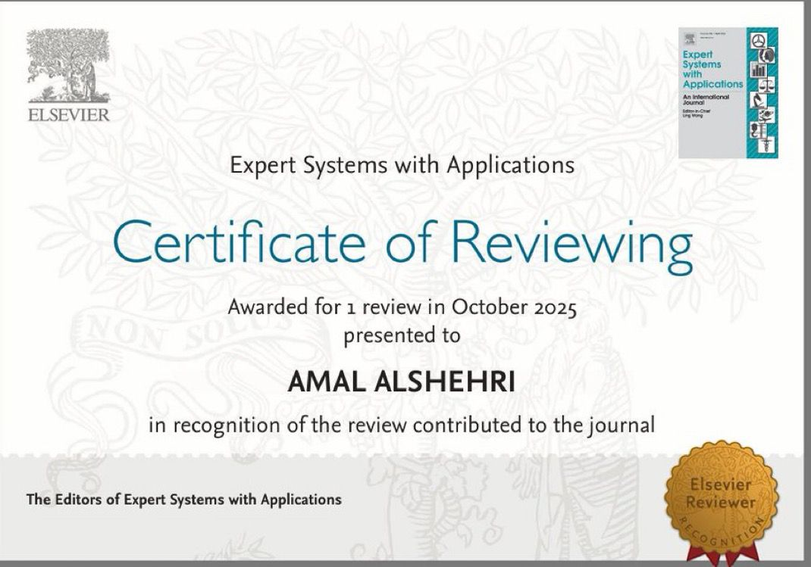

Neural reranking for UK statutory retrieval: Provision-level evaluation and an open distilled model
This work introduces UK-STATUTECORPUS and Distilled-Voyage-ModernBERT for provision-level statutory retrieval.
PhD candidate in the Department of Computer Science at Durham University, working on Legal AI, natural language processing, legal information retrieval, reranking, and legal reasoning.
My research focuses on building and evaluating AI systems for legal text. I am particularly interested in retrieval and reranking for statutes and case law, retrieval-augmented prompting, and the careful evaluation of large language models in legal information processing tasks.
My work sits at the intersection of artificial intelligence, natural language processing, and legal information systems. I study how models retrieve legal materials, rank evidence, and make entailment decisions under the constraints of legal language.
This work introduces UK-STATUTECORPUS and Distilled-Voyage-ModernBERT for provision-level statutory retrieval.
A unified empirical study of Team DU systems across legal case retrieval, case entailment, statute retrieval and entailment, and legal judgment prediction.
Team DU participated in all five COLIEE 2026 tasks. The strongest official result was in Task 4, where DU1 and DU2 achieved first place in statute entailment.
| Task | Result | Description |
|---|---|---|
| Task 1 | F1 = 0.314; rank 11/54 submissions | Legal case retrieval. |
| Task 2 | Official F1 = 0.343; post-competition F1 = 0.555 | Legal case entailment. |
| Task 3 | Official accuracy = 79.3%; post-competition accuracy = 91.5% | Statute retrieval and entailment. |
| Task 4 | Accuracy = 96.3%; rank 1/33 submissions | Official first-place result in statute entailment. |
| Pilot Task | TP accuracy = 73.1%; RE F1 = 68.2% | Unofficial submission for Japanese tort judgment prediction. |
Completed one peer review for Expert Systems with Applications, an Elsevier journal focused on expert and intelligent systems applied in industry, government, and universities worldwide.

Reviewing certificatePresented “Enhancing Trust in Legal AI: Optimising Span-Level Retrieval Architectures on LegalBench-RAG.”
I am happy to connect with researchers and collaborators interested in Legal AI, NLP, information retrieval, reranking, and trustworthy AI systems for legal text.
Email: amal.alshehri@durham.ac.uk
Durham: University profile
ORCID: 0000-0001-6903-6720
LinkedIn: amalsaad100